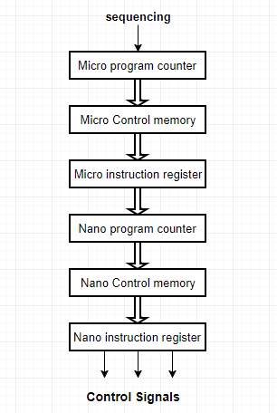

- The Nano-programming was first used in the QM-1 computer designed by Nanodata corp.
- In Nano-programming, we use two level of control memories :
- Micro control memory (µCM) : It is a higher level control memory.
- Nano control memory (nCM) : It is a lower level control memory.
- The µCM stores micro instructions whereas nCM stores nano instructions.
- The decoder uses Nano instructions from nCM to generate control signals.

- Advantage
-Nano-programming Reduces total size of required control memory.
-It also offers Greater design flexibility.
- Disadvantage
-Loss of speed due to extra memory access required.
- Complex control unit design.